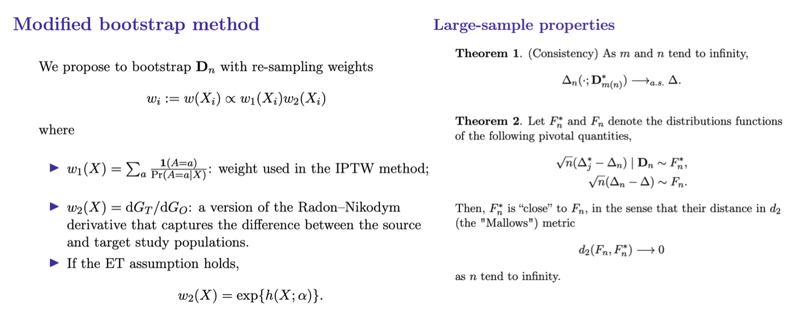

Research
Causal Effect Estimation and Transportation Using Modified Bootstrap Method
In recent decades, big public databases have become increasingly accessible, providing new opportunities for conducting empirical research into health, social, and economic relationships. Research on such databases, however, faces two major challenges. First, routine analyses typically reveal only associations instead of causal connections because (to serve general research purposes) most public databases consist of "observational" data rather than being assembled with data from randomized, controlled conditions. Second, public databases' population profiles may not be identical to the population of research interest. In this ongoing research project, we propose a modified bootstrap method to overcome these two challenges jointly. Specifically, we propose to incorporate two weights in the bootstrap resampling process. One weight accounts for the selection process of exposures, while the other accounts for the "covariate" shifting between the data and research target populations. The modified bootstrap has several important properties: It is computationally easy; nearly all steps can be accomplished using existing programs/packages. The resulting inferences do not rely on the central limit theorem to be valid. Moreover, the analysis of bootstrapped samples can be augmented by imposing an outcome regression model to achieve double robustness. We provide theoretical justifications for our proposed method.
 SlidesInformed Quantitative Pooling Strategies
Pooled testing is widely used for screening for viral or bacterial infections with low prevalence when individual testing is not cost-efficient. Pooled testing with qualitative assays that give binary results has been well-studied. However, characteristics of pooling with quantitative assays were mostly demonstrated using simulations or empirical studies. We investigate properties of three pooling strategies with quantitative assays: traditional two-stage mini-pooling (MP) (Dorfman, 1943), mini-pooling with deconvolution algorithm (MPA) (May et al., 2010), and marker-assisted MPA (mMPA) (Liu et al., 2017). MPA and mMPA test individuals in a sequence after a positive pool and implement a deconvolution algorithm to determine when testing can cease to ascertain all individual statuses. mMPA uses information from other available markers to determine an optimal order for individual testings. We derive and compare the general statistical properties of the three pooling methods. We show that with a proper pool size, MP, MPA, and mMPA can be more cost-efficient than individual testing, and mMPA is superior to MPA and MP. For diagnostic accuracy, mMPA and MPA have higher specificity and positive predictive value but lower sensitivity and negative predictive value than MP and individual testing.
PreprintAssessing Risk for Viral Rebound in the Era of U=U using CNICS Data
The "Undetectable = Untransmittable (U=U)" campaign started in 2016 and has created a paradigm shift in HIV public health messaging and prevention efforts. This collaborative research study seeks to identify risk factors for HIV viral rebound (i.e., failure of "U=U") among persons who started ART with subsequent established viral suppression. This study is conducted using the CNICS Data Repository, which integrates comprehensive clinical data from outpatient and inpatient encounters, including information on demographic characteristics, clinical and laboratory data, and medications.
Optimal Allocation of Gold Standard Testing Under Constrained Availability
A tripartite classification algorithm is proposed in this research project to address the question of when to make a decision and when we should wait to have more information before making a decision. The classification algorithm is motivated by the World Health Organization (WHO) guidelines for monitoring the effectiveness of human immunodeficiency virus (HIV) treatment in resource-limited settings. The guideline are mostly based on clinical and immunological markers (e.g., CD4 cell counts). Recent research indicates that the guidelines are inadequate and can result in high misclassification errors. Viral load (VL) is considered the “gold standard,” yet its widespread use is limited by cost and infrastructure. Our proposed tripartite classification algorithm uses information from routinely collected clinical and immunological markers to guide a selective use of VL testing for diagnosing HIV treatment failure, under the assumption that VL testing is available only at a certain portion of patient visits. Our algorithm identifies the patient subpopulation, such that the use of limited VL testing on them minimizes a predefined risk (e.g., misdiagnosis error rate). Diagnostic properties of our proposed algorithm are investigated and assessed by simulations.
ArticleUnifying instrumental variable and inverse probability weighting approaches for causal inference
Confounding is a major concern when using data from observational studies to infer the causal effect of a treatment. Instrumental variables, when available, have been used to construct bound estimates on population average treatment effects when outcomes are binary and unmeasured confounding exists. With continuous outcomes, meaningful bounds are more challenging to obtain because the domain of the outcome is unrestricted. We propose to unify the instrumental variable and inverse probability weighting methods, together with suitable assumptions in the context of an observational study, to construct meaningful bounds on causal treatment effects. The contextual assumptions are imposed in terms of the potential outcomes that are partially identified by data. The inverse probability weighting component incorporates a sensitivity parameter to encode the effect of unmeasured confounding. The instrumental variable and inverse probability weighting methods are unified using the principal stratification. By solving the resulting system of estimating equations, we are able to quantify both the causal treatment effect and the sensitivity parameter (i.e. the degree of the unmeasured confounding).
 Article
Article